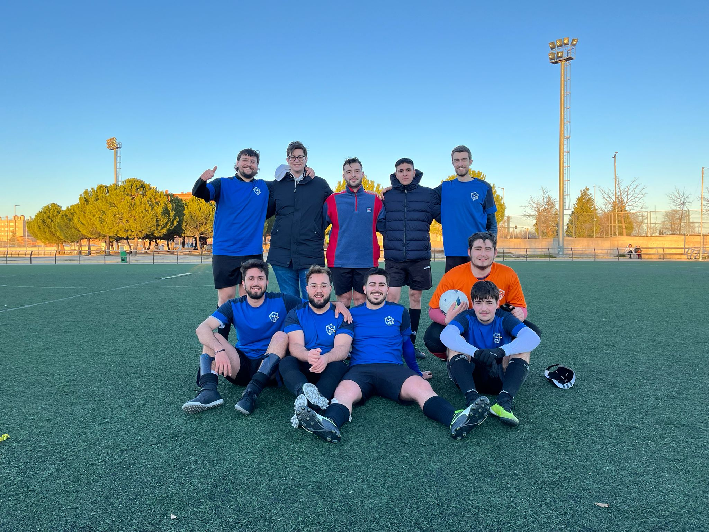

Resumen de la Jornada 11 (1ª fase)
Dakar Club (7) - (0) LOS CRACKS DEL 29
✍️ DERROTA SIN GOLES PERO CHILL
Por primera vez desde que empezó el campeonato, nuestro equipo ha sufrido una derrota (esto no es lo nuevo) sin conseguir marcar ni tan siquiera el gol de honor (aquí entramos en materia). Se vio a un equipo hastiado y roto que hizo que los contrarios se dieran un ágape de goles con nuestra portería.
Y es que el partido no es rescatable en ninguno de los dos tiempos. Hubo intentos, pequeños chispazos de esperanza en un mar de zozobra, algún control bueno de Munilla, una carrera a la desesperada de Alberca, y la mejor oportunidad del partido, cuando Lunar mandó el esférico al espacio, esto es, fuera de nuestra esfera. Sin embargo, nada acabo por salir, y no pudimos alcanzar la portería rival. De hecho no se(y nuestro equipo me atrevería a decir que tampoco) si el portero rival es bueno o malo. Misterios de la historia supongo, como los cabezazos a gol de Sergio Ramos a 4 minutos de terminar el partido. Esperamos que el equipo se recomponga y de lo mejor si en la segunda vuelta.